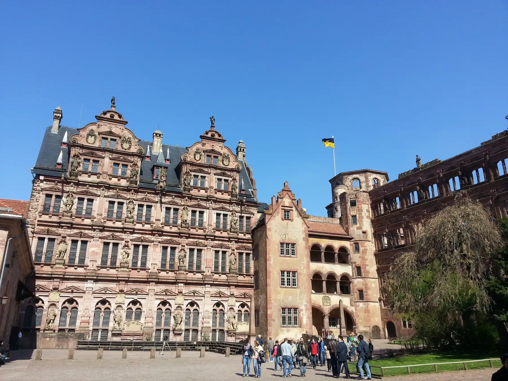
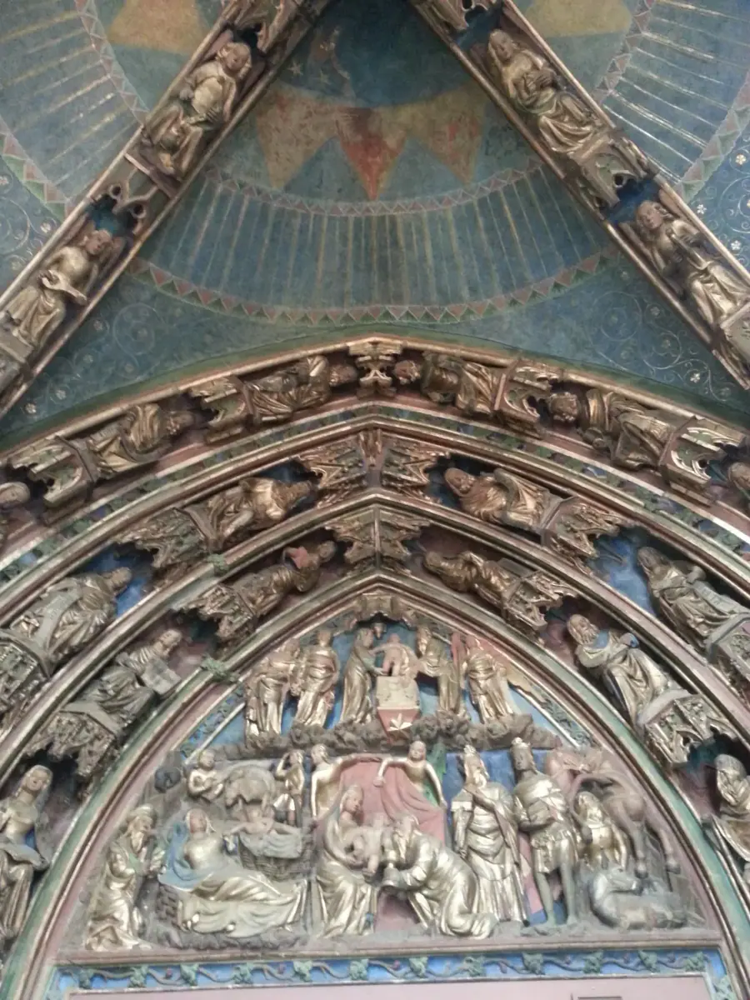
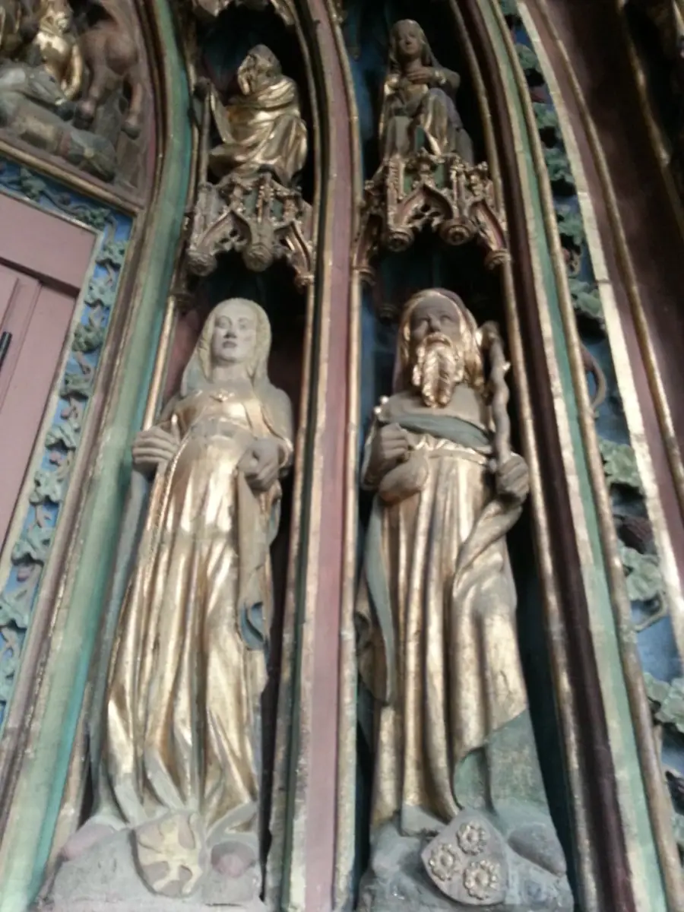
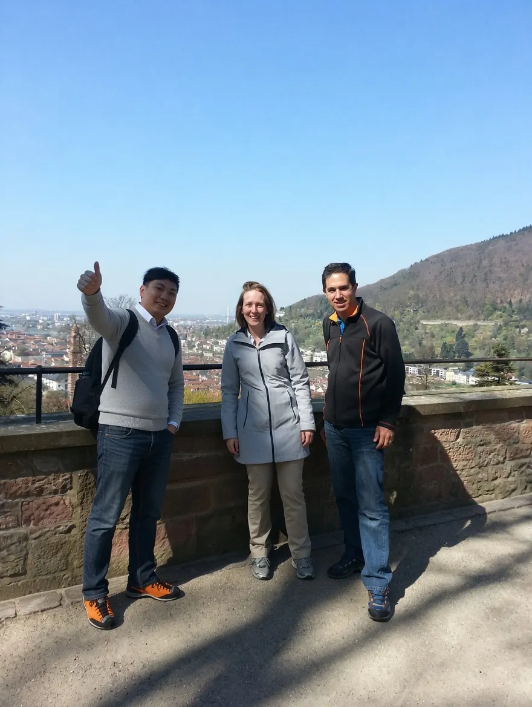
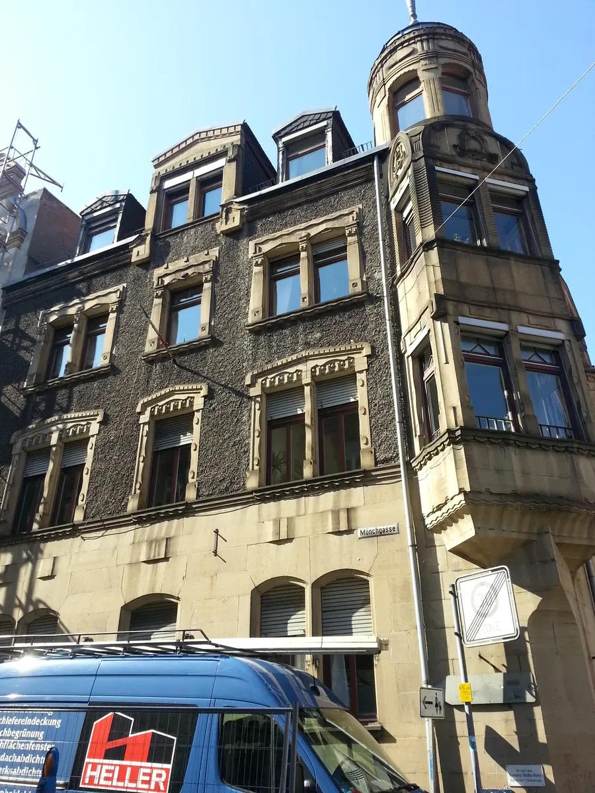
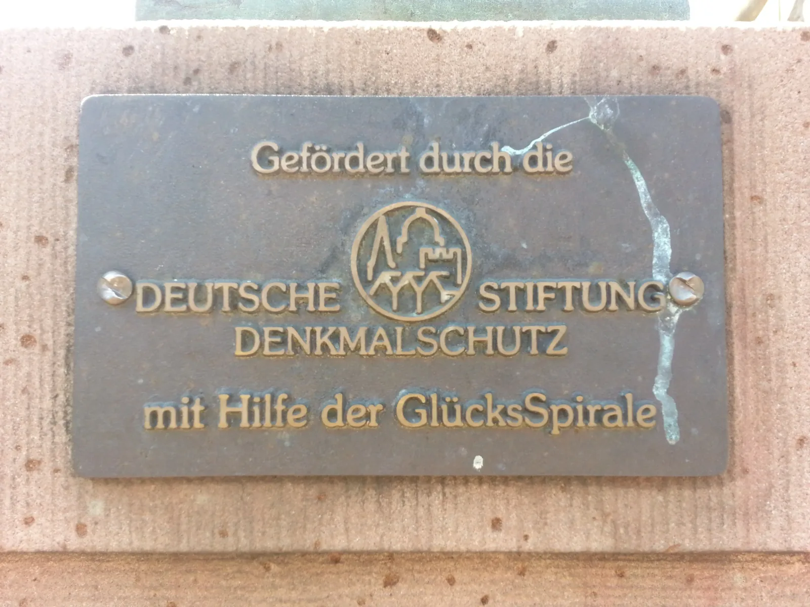
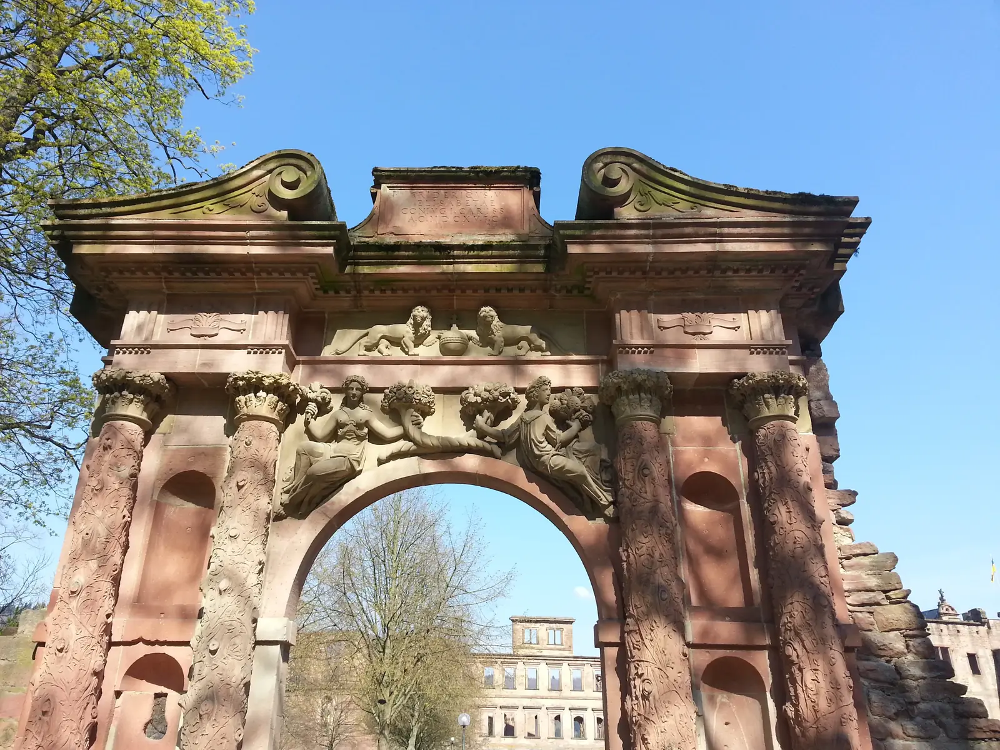
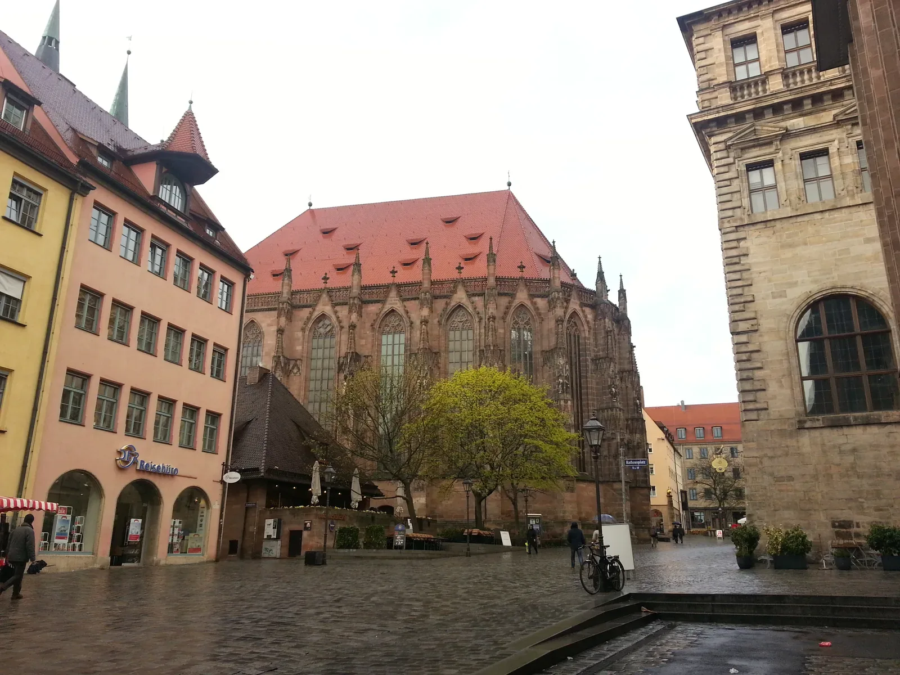
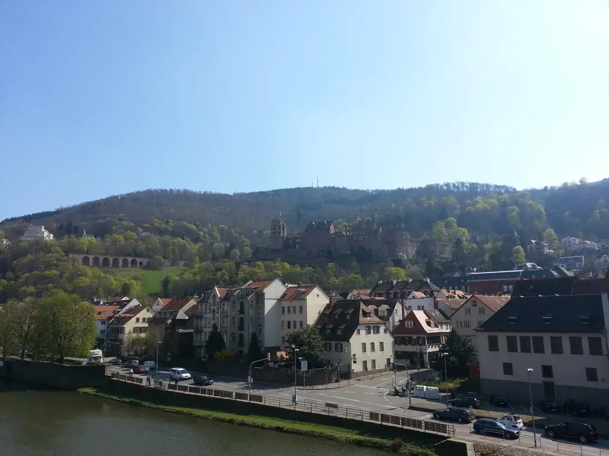

看懂德国，不能只看工厂：科隆与海德堡给我的另一种启发
Understanding Germany beyond its factories — two stops in Cologne and Heidelberg.

2012 年那趟德国之行，主线是纽伦堡的 FENSTERBAU FRONTALE 展会。展会看完，行程里还剩两站：科隆和海德堡。
严格说，这两站不在考察清单上。它们不是工厂，不是供应商，也不是行业协会的正式安排，只是密集日程里带出来的两次停留——一个为了科隆大教堂，一个为了海德堡大学。当时没打算写成考察报告，更像是在连着看设备、看产线、看展台的节奏里，换了两口气。
但十年之后回看，恰恰是这两次不在清单上的停留，补上了我对德国认知里最缺的一块：一个制造业强国，除了车间和展会，它的贸易网络、长期建设能力和教育体系，到底是什么样。
科隆：一座被莱茵河养大的贸易之城
科隆几乎是被莱茵河养大的。它卡在莱茵河中游最方便过河的位置上，从罗马时代起就是商贾必聚之地——这些是后来查证补充的背景。站在城里的时候，更直接的感受是这座城市的开阔和热闹：它不端着，像一个做了上千年生意的地方。
科隆大教堂是这趟停留的主要目的。它 1248 年动工，中途停了几百年，1842 年重新开工，到 1880 年才最终封顶，前后跨了六百多年；双塔高约 157 米，1996 年列入世界遗产。这些数字是后来核实的，但站在它下面时的那种尺度感是现场的。
真正让我停顿的不是高度，是时间尺度。我们习惯用季度、用财年衡量进度，而一幢教堂可以让几代人接着干，中途停了几百年还能重新开工。我不会把它当成某种社会能力的证明，但它给了我一个很具体的启发：有些事是要按几代人的尺度去做的。后来再去看德国的工厂和那些被称为隐形冠军的企业，我总会想起这座教堂——这只是我个人的联想，算不上解释。


把视线从教堂挪回莱茵河，科隆的另一层价值更清楚。莱茵河是欧洲最繁忙的内河航道，从瑞士巴塞尔一路通到荷兰鹿特丹出海，沿岸串起瑞士化工、德国制造和欧洲最大的海港；鲁尔区、杜伊斯堡就在科隆北边不远。两千年前如此，今天仍然如此：这个位置一直在做的一件事，是把内陆的生产能力和出海口连起来。
沿着这条河看下去，我对德国制造业的理解多了一层：它不只是一个个工厂，还嵌在一整套水陆联运、城市分工和产业配套长期磨合出来的流通网络里。工厂是看得见的那部分，网络是看不见的那部分——这是我的一点理解，不是对竞争力的完整解释。
还有一件事值得记：二战里科隆损毁严重，今天的市中心几乎是从废墟上重新长出来的。一座城市能从废墟上被重新建起来，在我看来也呼应了前面那种不急于一时的耐心。
海德堡：教育怎么变成产业
海德堡的气质和科隆完全不同。安静，书卷气，整座小城几乎是围着大学长的——老城区、哲学家小径、内卡河上的老桥，城里抬头就能看见半山腰那座红砂岩古堡，只留下半座废墟，并没有被修复完整。随便在街上走，都能感到一种被知识和历史泡透了的从容，这是我当时最直接的感受。


海德堡大学 1386 年建校，是德语世界最古老的大学之一，今天仍是德国顶尖学府。但这些沿革并不是这趟停留的重点。真正值得注意的是另一件事：大学不只是教书的地方，它和周边的科研机构、企业一起，构成了这个区域知识和人才体系里很重要的一部分。


后来查证才看清，海德堡周围并不是只有一座老大学：往南几十公里，是巴斯夫总部所在的路得维希港，和 SAP 总部所在的瓦尔多夫；海德堡与曼海姆一带，还聚集着一批医药企业和欧洲级的生命科学研究机构。所以海德堡不是一座孤立的老大学城，而是大学、科研机构和企业挨在一起的一个区域——人才从哪里来、知识怎么往产业走，在这里看得很直观。
再往下推一层，是人才培养这条线（这部分是后来的理解）：教育不只出研究成果，更出人。德国的双元制职业教育把课堂和车间绑在一起，年轻人一边在学校学理论，一边在企业里上手，毕业时已经是能直接进产线的技术工人。在我看来，这是理解德国技术人才从哪里来的一个重要切面；至于德国制造业的竞争力，显然还有很多别的成因，双元制远不是唯一的答案。


产业是一个国家的结果，不是原因——撑起那些工厂的，是它沉淀了几百年的历史耐心，和一套怎么培养人的教育传统。
——董立鑫 海鑫汇创始人兼执行总裁，新加坡世贸秘书长兼首席运营官
两站合起来，才是一份完整的市场认知
把这三站叠在一起看才完整：纽伦堡让人看见德国的产业组织和展会经济；科隆让人看见一个城市怎么用几百年把一件事做透，怎么在废墟上把自己重新建起来；海德堡让人看见一所大学怎么定义一座城，又怎么把知识变成今天的产业。它们指向的不是某一个政策或某一家企业的厉害，而是贸易网络、长期建设和教育体系在一个社会里长时间地互相喂养。
对今天做出海、做产业判断的人来说，这趟行程的提醒其实很朴素：别只盯着别人家车间的机器，也别把参加一场展会当作已经了解一个市场。人才从哪里来、产业网络怎么形成、长期能力怎么积累——这些更慢的变量，往往更决定你能不能在一个市场里留下来。
这也是我们对海外考察的理解：有价值的行程，不只是参观几家工厂、参加一场展会，也包括把当地的产业生态、人才体系和市场环境看清楚。看得越完整，判断才越接近真实。
本文整理自董立鑫（Bruce Dong）海外产业考察记录，首发于海鑫汇。